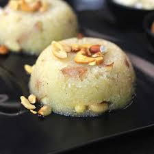

üçØ Sheera

Ingredients
- 1 cup semolina (suji)
- 1/4 cup ghee (clarified butter)
- 1/2 cup sugar (adjust to taste)
- 2 cups water
- 1/4 cup milk (optional, for creaminess)
- 1/4 tsp cardamom powder
- 1 tbsp chopped cashews
- 1 tbsp chopped almonds
- 1 tbsp raisins
- 1 tbsp saffron strands (optional, for color)
Instructions
- Heat ghee in a pan on medium flame. Add semolina and roast it until it turns light golden brown and releases a pleasant aroma. Stir continuously to prevent burning.
- In a separate pan, bring water and milk to a boil. Add the saffron strands (if using) and allow them to infuse.
- Once the semolina is roasted, slowly add the hot water-milk mixture to the pan with semolina, stirring constantly to avoid lumps.
- Add sugar and cardamom powder to the pan, mix well, and cook until the mixture thickens and the ghee begins to separate from the sides.
- In a small pan, heat a little ghee and fry the cashews, almonds, and raisins until golden. Add these fried nuts and dry fruits to the sheera.
- Continue to cook for 2-3 minutes until the sheera reaches your desired consistency. Serve warm.
Serve With
- Chappati or puri (for a traditional meal)
- As a standalone sweet dish
üí° Tip: For extra richness, you can add a few tablespoons of milk or cream towards the end of cooking.